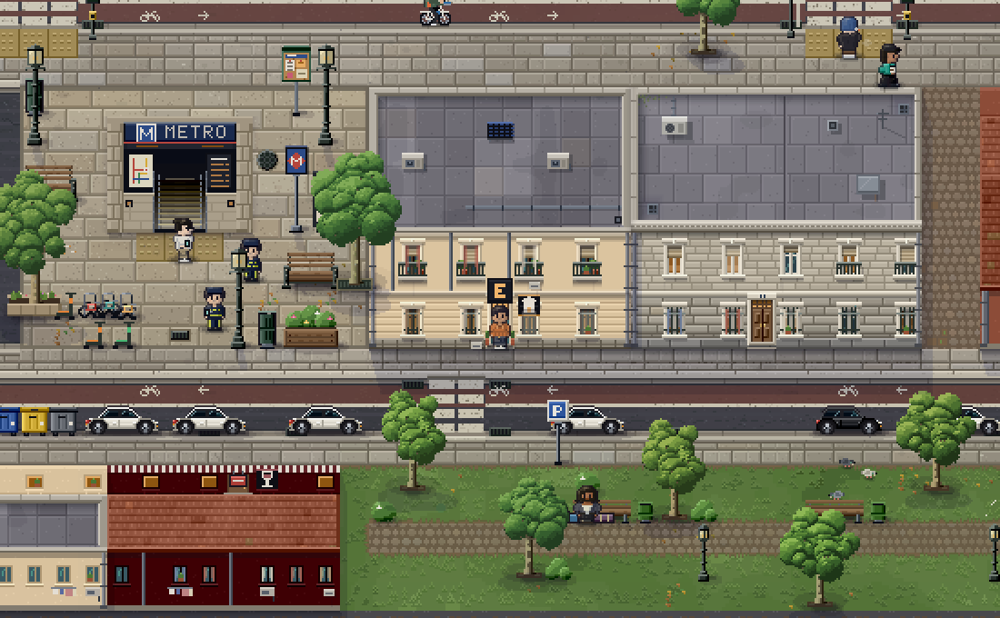
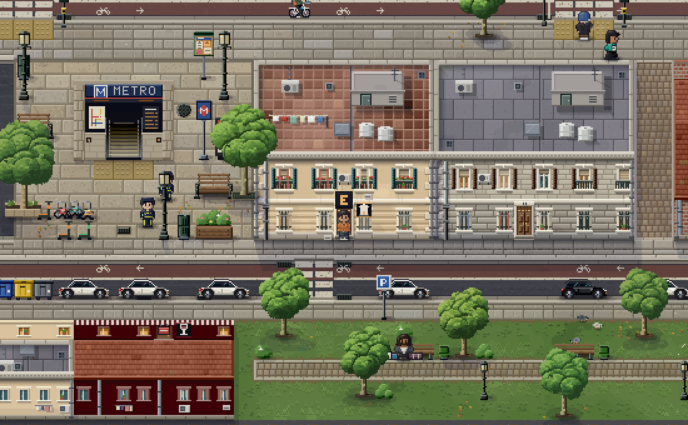

LIFE//SIM · acabado HD-04
capturas reales, mismo encuadre, zoom 2, día 6, semilla 103
Vista
Original completo
Mejorada completa
Comparar con deslizador
Zona
Calle residencial
Residencial · noche
Calle Mayor
Plaza y franja norte
Oficinas Atalaya
Cuatro Ríos
Cuatro Ríos · franja norte
Cuatro Ríos · cristal
Puerta Central
Velaria
Velaria · franja norte
Ribera
Ribera · cristal
Ribera · metro
Ribera · metro de noche
Arena
Arena · cristal y franja
Escala
1× (juego)
2×


ORIGINAL
MEJORADA